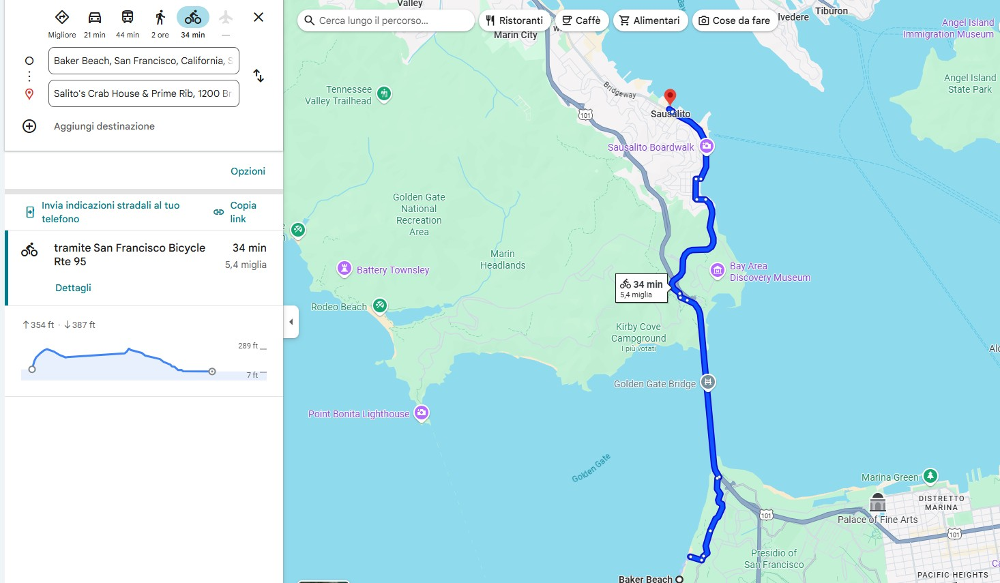
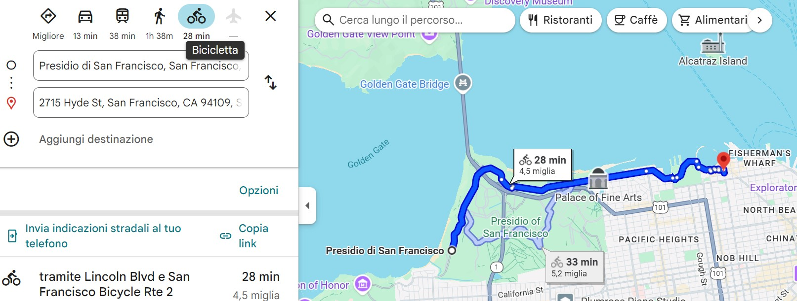

17 Agosto 2025 - Mattina
- 8:00-8:30 Noleggio e-bike
Tappa 1
15 min + 30 min (9:15)
Tappa 2
26 min + 1h (10:41)
Tappa 3
Giro Golden Gate Park
20 min (11:10)
Tappa 4
26 min + 20 min (11:56)
Tappa 5
11 min + (12:27)
Tappa 6
34 min (13:01)

Pranzo 13:01 - 14:30
17 Agosto 2025 - Pomeriggio
Tappa 7
Giro a Sausalito
30 min (15:00)
Tappa 8
36 min + 1h (16:36)
Tappa 9
28 min + 20 min (17:24)

Dopo consegna e-bikes
- Spuntino veloce e giro a Fisherman Warf (18:20)
- Presentarsi biglietteria crociera alle 18:30
Red & White Fleet Pier 43 1/2 (incrocio Taylor st e Imbarcadero)
Crociera ore 19:00